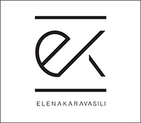

Established in 2015, ELENA KARAVASILI is a luxury handbag brand conceptualized and designed in London. The brand philosophy is the unification of two fundamental cultural movements: Minimalism and Classicism.
Click on the parts of the handbag to learn more about the EK brand!
|
|
|

About The DesignerElena is a London/Athens based fashion accessories designer. She completed her BFA in Integrated Fashion Design at Parsons School of Design. After finishing her BFA she decided to complete her MA in Fashion Artefact at London College of Fashion. Here she explored the boundaries of receptacles and focused on leather and marble. |